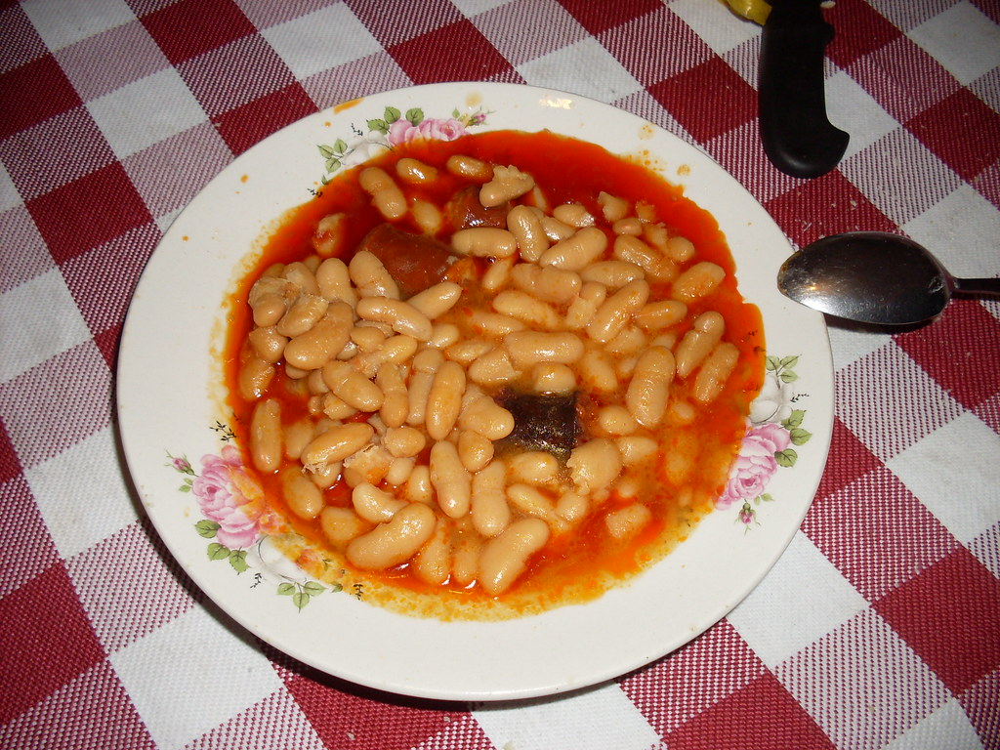

Fabada

Fabada is a traditional Asturian food made in a pot and usually
eaten for lunch.
To cook Fabada you will need:
- Traditional Fabes
- Chorizo
- Morcilla
- Lacón
- Half an onion
- and patience!
It takes 3-5 hours to fully cook and ints served in a bowl or a deep plate
Instructions:
- Put the fabes on a deep pot and soak them in water for a night
- Remove the water, add the compango and the half onion
- Let it cook for 4 hours